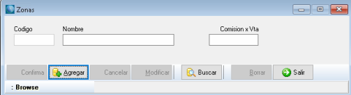

Sistema de Gestión Comercial
Acerca del Producto
Este sistema fue pensando para satisfacer las necesidades correspondientes a la
administración de los diferentes sectores de pequeñas
y medianas empresas, dando una solución óptima e integral que permitirá llevar a cabo las operaciones
necesarias para la fácil administración de ventas,
presupuestos, cobranzas, compras, órdenes de compras, pago a proveedores, control de stock, libro IVA
compras, libro IVA ventas, múltiples cajas,
libro de cheques de terceros, manejo de múltiples cuentas bancarias, administración de personal,
órdenes de producción y órdenes de trabajo (reparaciones / mano de obra).
Sus características principales son su facilidad de uso y la flexibilidad de adaptarse a las necesidades
de prácticamente cualquier empresa de cualquier rubro.
El sistema cuenta con una gran variedad de reportes y gráficos estadísticos útiles para la toma de
decisiones empresariales y la posibilidad de exportación en
diferentes formatos.
Gracias a la posibilidad de configurar diferentes usuarios con diferentes perfiles, el sistema permite
restringir la información solamente a los usuarios pertinentes
dependiendo del cargo y permisos según se haya decidido a nivel gerencial.
- Versión: 8.2.0.38
- Autor: Luis A. Roldán
- Fecha de Creación: 2003
- Última Actualización: 2022
Requerimientos del Sistema
Consideraciones Técnicas
Soporte Técnico
Primeros Pasos
Sección sobre recomendaciones al usar el sistema por primera vez, configuraciones iniciales, ingreso de parámetros de la empresa y variables generales del sistema.
Ingresar al Sistema
Una vez instalado el sistema, usted podrá acceder desde el ícono en el escritorio. Al abrir la aplicación, se le solicitará nombre de usuario y contraseña.

Ingreselas y presione Aceptar. Así se verá la pantalla principal del Sistema:

Acercando el puntero del mouse al Menú desplegable se mostrará una sección con Acciones Rápidas, cuyas funciones son explicadas mas adelante:

Haciendo click con el mouse en el botón de Menú, se mostrarán las opciones de Usuario:

Login: Cierra la sesión del usuario actual y solicita nuevamente nombre de usuario y contraseña.
Usuario: Función sólo para administradores. Permite administrar los usuarios del sistema. Se explica con
mayor profundidad en la sección Usuarios.
Acerca de: Muestra una ventana con información sobre el sistema.
Cambiar password usuario actual: Muestra la siguiente ventana, donde permite cambiar la constraseña del
usuario que ha iniciado sesión en el sistema.

Videos tutoriales: Abre en el navegador un canal de YouTube con videos tutoriales sobre el uso del sistema.
Salir aplicación: Cierra el sistema.
Haciendo doble click en el fondo de la aplicación, aparecerá un menú para elegir una imagen y cambiarlo:

Por último, haciendo click en cualquiera de las solapas se mostrarán todas las herramientas relacionadas a la solapa seleccionada. Por ejemplo, al hacer click sobre la solapa Ventas se desplegará el siguiente menú:

Aspectos Generales
Barra de Herramientas
Los botones de la barra de herramientas varían de acuerdo con las opciones disponibles de cada formulario, pero básicamente funcionan de la siguiente manera:
Así se verá la barra al abrir un formulario. De este modo, se puede buscar un registro existente o agregar uno nuevo.

Si se pulsa Agregar, se debe confirmar la operación para guardar los cambios.

Pulsando Borrar y confirmando la operación, se eliminará el registro actual.

Los botones Previo y Siguiente permiten navegar entre los registros, a partir de un registro elegido.
Esto significa que, si no hay un registro abierto, los botones están deshabilitados.

Al pulsar Buscar se pueden presentar diferentes opciones. El caso más simple se presenta en la siguiente ventana:

Como se ve, se despliega una tabla con los registros existentes, en este caso Monedas, y la posibilidad de ingresar el texto para facilitar la búsqueda.
La otra posibilidad se presenta cuando los registros tienen varias columnas, entonces se puede especificar otros filtros extra.
Por ejemplo, en el caso de Comprobantes, podemos buscar por Tipo y otros detalles como Letra y Número, y también Filtrar por Cliente.

Barra de Estado

En ella se encontrarán los estados de los formularios. Por ejemplo, en este caso, el formulario está en modo de Consulta porque no se modificará ningún dato.
En caso de estar agregando o modificando, estará en modo Agregando Registros. También muestra mensajes del estado de la información, por ejemplo, en este caso,
muestra que el Comprobante ya fue impreso por lo que no puede ser modificado.
Por lo tanto, las opciones Borrar y Modificar no estarán habilitadas.
Reportes
Se abren en una ventana aparte y, en general, se ven así:

Con la opción Guardar, los reportes se guardan con formato Report File para poder ser abierto,
modificado o simplemente archivado como un documento de Microsoft Word.
Valores
En los casos de manejo de dinero y valores usados en compras y ventas, el mecanismo utilizado es el siguiente:

En el ejemplo, estamos viendo un egreso de caja. El manejo de este comprobante está detallado en Fondos -> Egresos de Caja,
ahora sólo nos detendremos a ver cómo ingresar valores.
Primero se ingresa con qué caja se va a trabajar con el boton  debajo de Caja.
Luego, se ingresan los diferentes tipos de pago.
debajo de Caja.
Luego, se ingresan los diferentes tipos de pago.
Dependiendo el tipo de operación que se realice, serán las formas que estarán habilitadas.

Para acceder a las formas de pago debe presionar el Buscador o pulsar Ctrl + Enter o, en caso de que conozca el código de la forma de pago,
ingrese directamente el código.
Esta modalidad de abrir los buscadores se adopta en todas las pantallas.
Pagos en Efectivo

De todas las operaciones, la más sencilla, sólo debe ingresar el importe en el campo Unidades y confirmar.
En todos los casos, al momento de cargar un movimiento de valores, si no se especifican, por defecto toma el total en Efectivo
Cheques de Terceros
En caso de compra, debemos elegir un cheque que ya fue ingresado.
Por lo tanto, al elegir esta opción se despliega una ventana donde se detallan los cheques de terceros que tenemos en cartera.
Se elige uno con doble click y se cargan los datos automáticamente como muestra la siguiente figura:
En caso de venta, la acción correcta sería ingresar ese cheque. Por lo tanto, debemos cargar todos los datos del cheque.
Pulsando Enter luego de cada ingreso, el sistema lo llevará en el orden lógico de la carga de los datos.
La información a ingresar pertenece al cheque que el cliente le está entregando en forma de pago.
Presione Confirmar para guardar la operación.
Cheques Propios
Utilizando las chequeras de cheques propios, el sistema permite el ingreso de los datos referidos al cheque a emitir.
Transferencias
Dependiendo si se tratara de una compra o una venta, esta opción ingresará o egresará dinero de sus cuentas bancarias.
Ingrese, entonces, el número de transferencia, la cuenta involucrada y el importe. En el ejemplo, se trata de una venta, por lo tanto dice “Originado por” y un cliente,
en caso de una compra, la leyenda sería “A favor de” y un proveedor.
Presione Confirmar para guardar la operación.
Tarjetas de Crédito
Este tipo de valor se utiliza en las ventas. El sistema permite cargar pagos con tarjeta de crédito. Para ello ingrese la tarjeta de crédito,
las cuotas, el titular, las unidades (importe), Nro. de documento del titular y presione Confirma.
Las tarjetas de crédito se cargan en el menú Fondos, submenú datos, opción Tarjetas de Crédito.
Débitos Internos
Para realizar un débito, ingrese el número de débito, la cuenta bancaria y el importe. Presione Confirma para guardar los cambios.
Datos de la Empresa
Se accede desde el menú Parámetros, botón Datos de la Empresa

Es posible ingresar todos los datos correspondientes a la empresa, como muestra la imagen siguiente:

Buscar logo: El logo de la empresa se inserta desde esta opción. Se abre una ventana donde se elige el archivo.

Sucursales
Se accede desde el menú Parámetros, botón Sucursales.

Desde esta opción se pueden cargar las diferentes sucursales que componen a la empresa.

Recargo: Esta opción es usada cuando se quiere utilizar un recargo en el costo de la mercadería según la sucursal.
Los recargos utilizados en este sistema son: por sucursal, por condición de venta y por depósito.
Estos recargos sumados al costo de la mercadería dan el precio final de venta del producto.
Por eso, si el recargo elegido es por sucursal, aquí es donde se pone el porcentaje. Vale aclarar que se puede trabajar con varios recargos en un mismo producto.
Comprobantes
Se accede desde el menú Parámetros, botón Comprobantes.

En esta pantalla se cargan los comprobantes que se utilizan en la empresa.

- Código: se carga automáticamente y se utiliza para referenciar unívocamente a ese comprobante.
-
Tipo de comprobante: se elige qué va a ser ese comprobante. Estas opciones ya vienen cargados por defecto en el sistema.

- Clase de comprobante: Se puede poner una sigla que lo represente. Por ejemplo, si se trata de una Factura “A”, se puede representar con FA. Consta solamente de dos dígitos.
- Denominación: Se detalla el nombre del comprobante. Por ejemplo, Factura de Contado “A”.
- Sucursal: Detalla la sucursal a la que pertenece el comprobante.
- Tipo de numeración: Se especifica si es un comprobante de venta, compra o ambos y qué tipo de numeración va a llevar.
- Letra / Prefijo / Número: Estará habilitado sólo cuando se trate de un comprobante con Numeración Propia. Se detalla como será la numeración.
- Enumera desde: Sólo habilitado igual que en el caso anterior, se especifica desde qué número se empieza a numerar.
-
Archivo del reporte: Permite poner la ruta del reporte asociado a este comprobante.

- Afecta Libro IVA / Afecta Cta. Cte. / Desglosa IVA / Imprimir: Dependiendo de qué clase de comprobante se trate, aquí se puede elegir qué comportamiento va a tener el comprobante. Por ejemplo, si es una Factura de Compra A, todas las opciones serán seleccionadas, pero si se trata de un comprobante de Cobro de Cheque, sólo se seleccionará Imprimir.
- Copias a imprimir: En esta opción se puede especificar si se trata de un comprobante por duplicado, triplicado, etc.
Alícuotas de IVA
Se accede desde Parámetros, botón Parámetros de Impuestos, opción Alícuotas de IVA.

Esta pantalla permite el ingreso de las diferentes alícuotas de IVA con las que trabaja la empresa. El ingreso de la información es similar a los vistos anteriormente.

Tipos de Inscripción
Se accede desde Parámetros, botón Parámetros de Impuestos, opción Inscripcion en IVA.

En esta pantalla se permite la carga de las diferentes inscripciones en IVA y el comportamiento correspondiente a esa inscripción.

Datos Geográficos
Desde Parámetros, menú Parámetros Geográficos, podemos acceder a distintas ventanas para configurar los datos geográficos que usará el sistema.

En estas opciones se ingresan los datos que serán utilizados en el resto del sistema cuando sea necesario referenciar una provincia, zona o localidad.
Presione Agregar, complete los datos y presione Confirma para guardar los cambios. El mecanismo es igual en los cuatro casos.
Localidades
Se accede desde el menú Parámetros, submenú Datos geográficos, opción Localidades.
Provincias
Se accede desde el menú Parámetros, submenú Datos geográficos, opción Provincias.

Zonas
Se accede desde el menú Parámetros, submenú Datos geográficos, opción Zonas.

Paises
Se accede desde el menú Parámetros, submenú Datos geográficos, opción Países.

Condiciones de Pago
Se accede desde Parámetros, botón Condiciones de Pago.

En esta pantalla se cargan las diferentes condiciones de pago que se asociarán con los clientes a la hora de ingresarlos al sistema.

Se puede cargar un descuento por cada forma de pago.
Como vimos en Sucursal, también es posible cargarle un recargo, para ello se ingresa en descuento, pero con número negativo.
Configuración del Equipo Local
Se accede desde Inicio, botón Configuracion Local.

Desde esta opción se configurará el equipo local, o sea, el equipo donde se está trabajando actualmente.
Aquí se detalla en qué sucursal está, con qué depósito trabaja por defecto, el nombre de la base de datos a la que está referenciando, cuál es su caja por defecto,
algunos controles de stock y caja, los intervalos de cuenta corriente (por ejemplo, 30 días: mensual, 60 días: bimestral, etc.) y las impresoras.

Si está activa la casilla de verificación Controla Código de Stock, el sistema le propondrá el código del artículo al ingresarlo al sistema.
Si la empresa tiene una codificación interna de los artículos, desactive esta opción. Igualmente, más adelante entraremos en detalle en Stock -> Artículos.
Tipos de Retenciones
Se accede desde Parámetros, botón Parámetros de Impuestos, opción Tipos de Retenciones.

Aquí se pueden cargar los tipos de retenciones que sufre la empresa. Por ejemplo, retenciones de IVA, Ingresos Brutos, Ganancias, etc.
Percepciones
Esta sección es sólo para empresas que sean agentes de retención. Se accede desde Parámetros, botón Parámetros de Impuestos.
Hay dos opciones: Percepciones de IVA y Percepciones de Ingresos Brutos.

Percepciones de IVA
Permite el ingreso de los diferentes porcentajes de IVA.

Mínimo imponible: Especifica el importe a partir del cual se hará la percepción. Este es un valor fijo, pero puede cambiarse según el caso particular que se
está analizando.
Columna: Fija una posición en el Libro IVA Ventas.
Percepciones de Ingresos Brutos

Mínimo imponible: Especifica el importe a partir del cual se hará la percepción. Este es un valor fijo, pero puede cambiarse según el caso particular que se
está analizando.
Columna: Fija una posición en el Libro IVA Ventas.
Preguntas Frecuentes
En esta sección se detallan las preguntas más frecuentes de nuestros usuarios, algunas con videos en nuestro canal de YouTube donde explicamos paso a paso como resolver sus dudas respecto al uso del Sistema de Gestión.
Video tutorial aquí. Debajo de la aclaración también hay una explicación paso a paso.
Aclaración: en el video tutorial falta un paso que se debe realizar antes de poder usar una caja, que es el de asignar la misma a los usuarios responsables de operarla. Para esto, seguiremos los siguientes pasos:
- Nos dirijimos a la sección Otros, hacemos click en Opc de Usuarios y click nuevamente en Asignar Caja a Usuario.

- Se nos abrirá la siguiente ventana, donde podremos comenzar a asignar cajas a los usuarios que esten creados en el sistema. En este ejemplo,
asignaremos la Caja Ejemplo al usuario Master. Para ello, seleccionamos la caja que queremos agregar haciendo click con el botón secundario sobre ella,
de forma que esta quede resaltada. Luego, arrastramos con el botón primario del mouse sobre el usuario al que se la queremos asignar, en este caso
master, veremos que la caja es añadida debajo de su nombre. Finalmente, hacemos click en el botón Aplicar Cambios para guardar.

-
También podremos asignar una caja por defecto al usuario, para que al realizar cualquier operación el usuario automáticamente seleccione esta caja.
Para ello, hacemos click con el botón primario en la caja para seleccionarla, luego click derecho y finalmente click en "Hacer Caja por Defecto".

¡Cuidado! un usuario que NO tenga una caja asignada, como en la imagen es el caso del usuario matilupo, no podrá realizar ciertas operaciones de venta y manejo de fondos. Si tiene algún error al intentar realizar ventas, o si la caja que busca no le aparece, puede que se deba a que su usuario no tiene ninguna caja asignada.
Pasos para crear y abrir una caja
- Vamos a Fondos y hacemos click en Cuentas de Caja y Bancos.

-
Hacemos click en Agregar, se nos autogenerará un Código que podemos cambiar si así deseamos. Debajo, podremos darle un Nombre a la cuenta.
En el desplegable Tipo de Cta./Caja podemos elegir si se tratará de una cuenta de Caja o de Banco. Si elegimos Banco, debajo se habilitará el botón
donde podremos elegir entre los bancos ingresados en el sistema (ver Fondos -> Bancos).
También podremos ingresar el Número de cuenta bancaria, el Número de CUIT del Banco y la Razón Social. Luego de ingresar los datos, hacemos click en Confirma
y se guardarán los datos de la nueva Cuenta.

- Recomendamos realizar los pasos descritos en la Aclaración, donde asignamos la nueva Caja a los usuarios que tendrán permiso para operarla.
-
Nos dirigimos nuevamente a Fondos y hacemos click en Apertura de Cajas.

-
Una vez abierta la ventana, hacemos click en Agregar. Presionamos el botón para
seleccionar qué cuenta abriremos. Opcionalmente, podemos cambiar la Fecha o agregar Observaciones de ser necesario. Finalmente, hacemos click en Confirmar y
la caja ya estará abierta y disponible para su uso.

Video tutorial aquí. Explicación paso a paso próximamente.
Video tutorial aquí. Explicación paso a paso próximamente.
Video tutorial aquí. Explicación paso a paso próximamente.
Video tutorial aquí. Explicación paso a paso próximamente.
Video tutorial aquí. Explicación paso a paso próximamente.
Video tutorial aquí. Explicación paso a paso próximamente.
Stock
Al hacer click en la solapa Stock, se abrirá la siguiente sección con las herramientas relacionadas a
los artículos de la empresa y su control de stock.

Cargar Primeros Datos

Dentro del submenú Otros Datos, se encuentran las opciones necesarias para cargar esta información que será utilizada posteriormente en el ingreso de los artículos,
estas son:
Marcas

Rubros

Subrubros
Depósitos

Unidades de Stock
A diferencia de las otras opciones, se accede desde Parámetros, botón Unidades de Stock.

Se nos abrirá la siguiente ventana, donde podremos configurar los distintos tipos de unidades de stock que utilizará el sistema.


Artículos
Se accede desde el menú Stock, opción Artículos.

Las solapas principales para la definición de los artículos son:
Datos Principales

- Código: El sistema sugiere uno, conformado según los códigos del rubro y subrubro. Si la empresa tiene su propia codificación, asegúrese que esté desactivada la opción Controla Código de Stock en Configuración del equipo local del menú Parámetros, ver Primeros Pasos -> Configuracion Local.
- Detalle: Nombre del producto.
- Código de Barras: Opcionalmente, se ingresa el número correspondiente al código de barras, directamente con el lector de código de barras.
- Marca / Rubro / Subrubro / Unidad de Venta: Definidos en el punto anterior, son las características del artículo.
- Controla Stock: Significa que el ingreso o egreso de este producto se verá reflejado en los saldos de Stock.
- Actualiza costo con la compra: Si esta opción está activada, cada vez que se ejecute una compra, se actualizará el costo de la misma con el monto de la compra. De no ser así, el costo será el mismo desde su carga inicial o desde alguna eventual modificación manual.
- Código de proveedor: El código del artículo según el proveedor.
- Código de reemplazo: Puede ingresarse el código de algún artículo que pueda servir como reemplazo de éste.
- Tabla: Se detallan los depósitos donde se van a almacenar los artículos. Volviendo a lo explicado en Sucursales, aquí también se puede cargar un recargo por depósito, desde la columna % Recargo. Se detallan además el stock inicial, o sea, de cuánto fue la primer compra. En el stock medio se ingresa el punto de pedido o stock crítico. El stock mínimo, que es el mínimo que puede haber en stock de ese artículo, llegando a ese valor se necesita reponer la mercadería urgentemente. El stock actual, que es el stock que hay en este momento.
Costos/Impuestos

- Modo de Gravamen: Se especifica si está gravado, exento o con impuestos internos.
- Costo no Gravado: Si se tratara de un artículo no gravado, aquí se especifica su costo.
- Precio no Gravado: Si se tratara de un artículo no gravado, aquí se fija su precio.
- Tasa: Aquí se especifica la tasa de IVA que corresponde al artículo.
- Costo Gravado: Si se trata de un artículo gravado, aquí se especifica su costo.
- Precio Gravado: Si se trata de un artículo gravado, aquí se especifica su precio.
- Sobre Tasa: Esta Sobre Tasa se utiliza cuando el cliente es Responsable No Inscripto. En este caso, si el artículo es gravado,
esta Sobre Tasa se suma al precio del artículo más la tasa correspondiente. Este comportamiento está configurado en el menú Parámetros -> Inscripciones en IVA.

- Costo Total: Calculo del costo total.
- F. Precio Total: Calculo de precio total.
- Tabla: Lista todos los proveedores de ese artículo.
Movimientos de Stock
- Tabla: Detalla los diferentes movimientos en el stock de ese artículo según el depósito elegido en el período seleccionado. Para listarlos, pulsar Ver Movimientos o F3.
- Tipo de Operación: Filtra la tabla dependiendo de qué clase sea la operación. Si la tabla no se actualiza automáticamente según la operación elegida, presione Ver Movimientos nuevamente.
Operaciones de Stock

Consulta

Seleccionando el depósito (Paso 1), se detallarán todos los productos existentes en la tabla principal. Este resultado se puede filtrar por marca,
rubro y subrubro (Paso 2). Seleccionado un determinado producto en la tabla principal (Paso 3), se detalla en la tabla Existencia Actual el stock actual del
artículo de todos los depósitos.
Con el botón Buscar se puede buscar un producto de la lista de artículos resultante de las búsquedas anteriores.
Existencias

Detalla por depósito los costos de los artículos. Es posible filtrar la información por marca, rubro y subrubro, y ordenarla haciendo click sobre el nombre
de las columnas.
Presionando Imprimir, se verá la siguiente pantalla:
Las columnas y el detalle de la información estarán ligados a las opciones: Muestra con stock cero, Imprime stock valorizado, Ver punto de pedido. La opción Imprime stock valorizado genera el reporte con el precio de los artículos y la opción Ver punto de pedido toma el stock medio que fue cargado en Artículos. Para ver más información sobre los reportes consulte la sección Primeros Pasos -> Reportes.
Transferencias
Desde esta opción es posible transferir artículos de un depósito a otro. Esta operación generará un comprobante que se podrá imprimir desde la opción Imprimir.

Para llevarla a cabo se deben seguir los siguientes pasos:
- Se selecciona una fecha, por defecto el sistema pondrá la fecha actual, pero pulsando sobre la pestaña, se abre un calendario donde se puede seleccionar la fecha deseada
- Se selecciona el depósito haciendo click sobre el buscador o presionando Ctrl + Enter.
- Se selecciona el tipo de comprobante, por defecto, es un comprobante de Transferencia, pero pueden usarse comprobantes personalizados definidos anteriormente en Comprobantes (ver Primeros Pasos -> Comprobantes). La numeración se pondrá automáticamente.
- Se seleccionan los depósitos Origen y Destino de la misma manera.
- En el Detalle, se seleccionan los artículos a transferir, cantidad y precio. El precio por defecto es el costo actual del artículo, pero puede modificarse.
- En observaciones se pueden describir detalles de la operación o, simplemente, la información que se considere necesaria para la transferencia.
- Con Confirma, acepta y guarda la operación.
Ajustes

Desde esta opción se puede ajustar el stock existente de un determinado depósito. En el detalle se agrega el artículo a ajustar, el sistema muestra el stock actual y en Cantidad se ingresa el ajuste deseado. Si este valor es un número positivo, se agregará al stock; de ser número negativo, se restará.
Precios
Las opciones de ajustes de precios de los artículos se encuentran en el submenú Actualización Precios.
Actualización de Precios General
Mediante esta operación se pueden actualizar todos los precios de los artículos.
Se pueden seleccionar por marcas, rubros o subrubros. Al activar la casilla, se habilita el buscador para poder ingresarlos.
Presione Consultar para desplegar el listado de los artículos según la selección elegida.
En el apartado de Columnas Visibles están las diferentes opciones que podemos actualizar. Por cada una de ellas que seleccionemos,
se agregarán dos columnas a la tabla, una con el valor actual y la otra con el nuevo valor que surge de aplicar la Variación en %.
Para ello, active la casilla que corresponda, ingrese el porcentaje, que puede ser positivo o negativo dependiendo si quiere aumentar o disminuir el valor,
y presione Calcular. Presione Confirma para guardar los cambios.
Si se desea cambiar el margen de ganancia, al activar esta casilla, se deberá ingresar además el depósito al que corresponde.
Actualizacion de Precios Manual
Mediante esta opción se pueden actualizar los precios de los artículos, pero manualmente. Para ello, se listan los artículos
(que también se puede filtrar por marcas, rubros y subrubros) y en la columna Fijación Precio Total Nuevo se ingresa el nuevo precio.
El botón Buscar Todos trae todos los artículos o sea, todas las marcas, todos los rubros y todos los subrubros.
Una vez ingresado todos los precios que se querían cambiar, presione Aplica Cambios para guardar los nuevos datos.

Lista de Precios Personalizada
Se encuentra en el submenú Stock Listados, opción Lista de Precios Personalizada.

Esta opción permite generar una lista de precios que se adapte a las necesidades del momento.
La tabla superior muestra todos los subrubros del depósito elegido y la tabla inferior el detalle de los artículos que lo componen y su costo.

Para generar una lista de precios personalizada se deben seguir los siguiente pasos:
- Elegir el depósito y presionar Iniciar.
- Se puede modificar el orden de las columnas, haciendo click sobre el nombre de las columnas.
- Para seleccionar qué rubros estarán presentes en la lista, haga click sobre las casillas de verificación de la columna Imprime de cada subrubro. O puede presionar Selecc. Todos para seleccionar todos o Desel. Todos para quitar la selección actual.
- Presiona Imprimir para generar la lista. Con Imprimir P. con IVA, se mostrará el precio con IVA, caso contrario, lo mostrará sin IVA.
Rentabilidad
Se accede desde Stock, submenú Stock Listados, opción Rentabilidad

Esta pantalla muestra los artículos vendidos en un período determinado, comparando precios de compra y venta, dando un porcentaje de la rentabilidad obtenida. En el cuadro % Promedio se puede ver el porcentaje promedio de ganancia de todas las operaciones realizadas.

Los pasos a seguir son los siguientes:
- Seleccione un período.
- Presione Buscar. En la tabla debajo se detallarán los artículos vendidos en ese período.
- Posiciónese sobre un artículo y presione el botón + (también puede hacer doble click sobre el artículo).
Aparecerá una nueva subtabla donde se detallarán todos los comprobantes de las ventas realizadas y los precios de costos y venta y el porcentaje de ganancia.

- Presione Imprimir para listar todos los artículos vendidos.
Artículos Exentos Vendidos
Se accede desde el submenú Stock Listados, opción Informe de Artículos Exentos Vendidos.

Lista todos los artículos exentos vendidos en un período determinado. Seleccione el período y presione Buscar. Con Imprimir generará el reporte.

Listado de Rubros y Subrubros de Stock
Se encuentra en el submenú Stock Listados, opción Listado de Rubros y Subrubros de Stock

Muestra un listado de todos los rubros y subrubros de stock. Presione Consultar para iniciar el listado, puede tomar un tiempo. Este listado puede imprimirse, para ello, presione Imprimir.

Ventas
Al hacer click en la solapa Ventas, se abrirá la siguiente sección con las herramientas relacionadas a administración de datos de Clientes, facturación y venta de productos de la empresa:

A continuación se describen las funcionalidades de las herramientas que aparecen en esta solapa.
Altas, Bajas y Modificaciones (ABM) de Clientes
Se accede desde el menú Ventas, opción ABM de Clientes.

Mediante esta opción se podrán registrar los datos de los clientes que serán utilizados en las demás operaciones. Aunque el sistema permite dejar opciones en blanco, siempre es conveniente ingresar la mayor cantidad de información posible, así su base de datos será más completa y de mayor calidad.
Datos principales:
En la primer solapa se detallan los datos principales del cliente, a saber:

Código: El sistema propone automáticamente un código de cliente.
Nombre: Nombre de fantasía de la empresa o nombre del cliente. Al llenar este campo y
presionar Enter,
se completarán automáticamente los campos Nombre Ampliado y Razó Social.
Razón Social: Por defecto el sistema cargará el mismo nombre ingresado recién, pero se puede
cambiar por la razón social del cliente según corresponda.
Domicilio Comercial: Ingrese aquí el domicilio comercial del cliente
Localidad: Pulsando en el botón Buscado o presionando Ctrl + Enter, podrá acceder a las
localidades cargadas en Datos Geográficos (para más información ver sección Primeros Pasos -> Datos
Geográficos).
Vendedor: Aquí se puede guardar el vendedor que habitualmente trabaja con este cliente. Los
vendedores serán cargados en Personal, que lo veremos más adelante.
Cobrador: Aquí se puede guardar el cobrador que habitualmente trabaja con este cliente. Los
cobradores serán cargados en Personal, que lo veremos más adelante.
Teléfonos: El sistema provee la posibilidad de guardar tres teléfonos diferentes: dos
teléfonos fijos y un teléfono celular.
Límite de crédito: Si el cliente tiene un límite de crédito se especifica aquí. Gracias a
esto, en la factura en
cuenta corriente saldrá un cartel si el cliente está excedido en el límite, sólo a modo informativo.
Datos Adicionales para Personas Únicas: Si el cliente es una Persona Única, en esta sección
podremos ingresar datos adicionales como Tipo de Documento y Número,
y su Fecha de Nacimiento.
Datos impositivos:
En esta segunda solapa se pueden cargar los Datos Impositivos del cliente:

Condición de IVA: Aquí se especifica si el cliente es Responsable Inscripto, Monotributista,
etc. Haciendo click sobre la pestaña se despliegan las
diferentes opciones. Éstas fueron cargadas en Tipos de Inscripción (ver Primeros Pasos -> Tipos de
Inscripción en IVA).
Nro. CUIT: Aquí se ingresa el número de CUIT del cliente.
Sucursal: Aquí se especifica a qué sucursal pertenece el cliente.
Fecha Ult. Compra: Al dar de alta al cliente, esta opción aparecerá deshabilitada, pero si
se desean ver los datos del cliente más adelante,
se mostrará aquí la fecha de la última venta realizada a este cliente.
Fecha de alta: Fecha en la que se ingresaron los datos por primera vez.
Zona: Aquí se ingresa la zona a la que pertenece. Las zonas fueron especificadas en Datos
Geográficos (ver Primeros Pasos -> Datos Geográficos).
Condiciones: según corresponda, el cliente emitirá Facturas y/o Remitos. Esta opción define
el comportamiento del cliente.
Usar Comp. para Facturar en Cta. Cte.: aquí se elige el comprobante que se utilizará para
facturarle.
Los comprobantes fueron definidos con anterioridad en Comprobantes (ver página 17).
Estado de la cuenta: Al momento del alta, el estado del cliente será activo. Cuando éste sea
dado de baja, su estado será inactivo.
Fecha del último pago: Será la última fecha donde se registró un pago por parte de este
cliente.
Al igual que Fecha Ult. Compra, estará deshabilitado al momento de darle de alta.
Condiciones de pago: Esta tabla permite ingresar todas las condiciones de pago que le
corresponden a este cliente.
Estas condiciones fueron cargadas en Condiciones de Pago (ver Primeros Pasos -> Condiciones de Pago).
Observaciones: El sistema le brinda este espacio para cargar información que necesite que no
fue contemplada en las opciones anteriores.
Configuración de Comprobantes:
En la tercer solapa, Comprobantes - Transporte - Abono plantilla, es posible configurar los comprobantes
que se utilizarán por defecto para este cliente:

Comprobante para Facturar en Cta. Cte: Se ingresa el comprobante usado por defecto usado en
Facturas de Cuenta Corriente para este Cliente.
Comprobante para Facturar de Contado: Se ingresa el comprobante usado por defecto usado en
Facturas de Contado para este Cliente.
Comprobante para Notas de Débito: Se ingresa el comprobante usado por defecto usado en Notas
de Débito para este Cliente.
Comprobante para Notas de Crédito: Se ingresa el comprobante usado por defecto usado en
Notas de Crédito para este Cliente.
Comprobante para Ticket: Se ingresa el comprobante usdao por defecto usado en Notas de
Débito para este Cliente.
Comprobante para Recibo: Se ingresa el comprobante usado por defecto en Tickets de Venta
Contado para este Cliente.
Transporte Habitual: En esta opción, puede elegir cuál es el transporte por defecto que
realiza las entregas a este Cliente.
El ingreso de transportes se detalla en otra sección.
Datos de Lugares de Recepción:
En la cuarta solapa, L.D.R., se ingresa los Lugares de Recepción del Cliente, en caso de que trabaje con
varios sucursales o depósitos:

 Primer
Registro
Primer
Registro
 Registro
Anterior
Registro
Anterior
 Siguiente
Registro
Siguiente
Registro
 Último
Registro
Último
Registro
 Agregar
Registro
Agregar
Registro
 Eliminar
Registro
Eliminar
Registro
 Editar Registro
Editar Registro
 Confirmar Datos del Nuevo Registro
Confirmar Datos del Nuevo Registro
 Cancelar
Ingreso de Nuevo Registro
Cancelar
Ingreso de Nuevo Registro
 Actualizar Lista de Registros
Actualizar Lista de Registros
De este modo, podemos recorrer los diferentes registros, en este caso, los diferentes lugares de recepción de este cliente. Si presionamos Agregar Registro, el navegador se comportará de la siguiente manera:

Los botones de la barra de navegación se habilitarán y también podremos editar los campos de Nombre,
Dirección, Código Postal y Localidad.
Además, a medida que completemos estos campos, se irán completando debajo en la tabla de Lugares de
Recepción.
Presione Confirmar o Cancelar para guardar o cancelar la operación. Si desea agregar un nuevo registro,
presione nuevamente Agregar registro,
si desea borrar un registro presione Eliminar Registro.
Si desea modificar un registro, haga un click sobre él en la tabla y presione Editar Registro Actual. El
navegador se comportará de la siguiente manera:

Listados
En esta solapa encontraremos un listado total de todos los clientes. Elija si quiere ver los clientes activos, dados de baja (inactivos), en gestión judicial o todos. También puede distinguir clientes por Sucursal, Categoría, Prestador, Vendedor, Tipo de Servicio, Grupo de Abono, Zona y Cobrador. Presione el botón Listar para confirmar las opciones seleccionadas y generar el listado de clientes. En la tabla inferior se mostrará la información.

Haciendo doble click sobre el cliente, se abrirán sus datos en la solapa Datos del Cliente. Desde Imprimir podrá visualizar una vista previa en formato imprimible de comportamiento similar al visto en Reportes (ver Primeros Pasos -> Aspectos Generales -> Reportes).
General (A Hacer)
En esta sección se describirán funcionalidades generales que comparten las ventanas relacionadas con la facturación, presupuestos, remitos, etc. Es recomendable leer esta sección antes de continuar con algunas de las funcionalidades, ya que en sus secciones correspondientes se hará referencia al contenido descrito a continuación.

{kind=link}
Presupuestos
Se accede mediante el botón Presupuestos:

Mediante esta opción se pueden crear presupuestos a los diferentes clientes creados anteriormente. La pantalla se verá de la siguiente manera:

Presione Agregar para crear un nuevo presupuesto. Con Enter o el mouse vaya navegando por los diferentes
campos del encabezado.
El sistema por defecto ingresará la fecha actual, la sucursal desde donde se está trabajando, el tipo de
comprobante y el número que le corresponde.
Igualmente estos datos pueden ser cambiados. El siguiente dato que deberá ingresar es el cliente, esto
puede hacerse de tres maneras diferentes:
- Presione el botón y busque
en la lista de clientes.
- Presione Ctrl + Enter y también se le desplegará el listado de clientes.
- Si conoce el código del cliente, ingréselo directamente.
Con el botón Editar Cliente  ,
puede cambiar los datos del cliente particularmente para este presupuesto.
,
puede cambiar los datos del cliente particularmente para este presupuesto.
Con el botón Nuevo Cliente  ,
puede ingresar un nuevo cliente para este presupuesto.
Cualquiera de estos botones abrirá la siguiente ventana donde ingresar o modificar los datos del
cliente:
,
puede ingresar un nuevo cliente para este presupuesto.
Cualquiera de estos botones abrirá la siguiente ventana donde ingresar o modificar los datos del
cliente:

Con el botón Confirmar, crearemos un nuevo cliente o modificaremos los datos del cliente que
hayamos seleccionado y cerraremos la ventana.
El botón Cancelar anula la operación.
En el caso de Editar Cliente, la ventana tendrá un botón extra Guardar en Clientes que utilizará
los datos ingresados para guardar una nueva entrada en la lista
de Clientes en lugar de modificar los datos del cliente que hayamos seleccionado.
Al ingresar el cliente, Lugar de Recepción, Depósito y Condición de Venta se cargarán automáticamente
según lo que se haya cargado en el ABM de clientes.
Estos datos también se pueden modificar.
Por último, y con esto terminaríamos el encabezado del presupuesto, podemos cargar el Vendedor que realiza
la operación.
Luego, en la tabla se irán cargando uno a uno los artículos presupuestados. Para ello debe ingresar el
código de artículo,
puede hacerlo de la misma manera que cargó el código del cliente. Automáticamente se cargarán el nombre
del artículo, la unidad, el IVA y el precio.
Lo que queda sombreado en amarillo no puede ser modificado, pero tanto el nombre del artículo como su
precio pueden ser modificados.
Por último ingrese la cantidad deseada y, en caso de existir, el descuento. Con la tecla Tab que se
encuentra a la izquierda de su teclado,
podrá cargar el siguiente artículo.
Si elige (haciendo click) un artículo de la tabla y presione F11 podrá ver todos los movimientos de stock
de ese artículo.
También puede cargarse un descuento que será general para todos los artículos desde Dsto % que se
encuentra a la derecha inferior de la pantalla.
Detalles de Impuestos

El funcionamiento es muy similar a vistos anteriormente. Veamos los diferentes valores:
- Subtotal: Es el importe de todos los artículos presupuestados que serán gravados.
- Exento: Si existieran artículos exentos, aquí va el subtotal.
- Dsto: Este descuento es el que fue cargado en la solapa Detalles, muestra el porcentaje aplicado a Subtotal.
- Exento: Muestra el porcentaje de descuento aplicado a Exento.
- Total Neto: Compuesto de la suma de Subtotal y Exento menos los descuentos.
Por último se muestra el total de la operación, que surge del Total Neto más los impuestos detallados en la tabla.
Presione Confirmar para guardar la operación.
Listado de Presupuestos por Cliente
Se accede desde el submenú Listados Relacionados a Comprobantes, opción Listar presupuestos por cliente

Mediante esta opción puede listar los presupuestos pendientes de un cliente determinado en un período determinado. Para ello deberá elegir el cliente y presionar Ver.
Remitos
Se acceden desde el botón Remitos.


El ingreso de los datos en la cabecera es similar al visto en Presupuestos (ver Ventas -> Presupuestos).
Los datos adicionales que encontramos son:
Número de Factura: Al momento de ingresar el remito, este número estará deshabilitado, pero una vez
facturado, como veremos a continuación, aquí se registrará el número de la factura generada.
Nro de pedido: Por defecto 1, especifica la cantidad de entregas que involucran a este remito.
En la barra de herramientas encontramos el botón Anular Comprobante, éste permite anular el remito una vez
que fue confirmado y se activará la casilla de verificación Anulado.
La carga de los artículos es igual a lo visto en Presupuesto. Al presionar F11 sobre un artículo, se podrá
ver un listado de movimientos del mismo.
Detalles de Impuestos
El El detalle mostrado es igual al que hemos visto en Presupuestos
Facturación de Remito Individual
Se accede desde el submenú Otros Remitos, opción Facturar Remitos.

Esta opción permite facturar uno a uno los remitos preparados en el punto anterior. Para ello se debe elegir la sucursal a la que pertenecen, el depósito y presionar el botón Buscar.

Seleccione un remito y presione Confirma. De esta manera se abrirá la pantalla de facturación en cuenta corriente.
Si los precios ingresados de los artículos fueron modificados el sistema pedirá confirmación de cada uno con el precio actual y el nuevo.
El tipo de comprobante que se generará estará determinado por lo que se haya configurado en el ABM de clientes (ver Ventas -> Clientes).
Verifique que los datos sean correctos y presione Confirmar. De esta manera se registra la venta en cuenta corriente de estos artículos.
El detalle de este tipo de Facturación lo veremos más adelante en Facturación en Cuenta Corriente. La confirmación de la venta implica también la impresión del
comprobante.
Si desea Imprimir la factura presione Yes, caso contrario presione No.
Facturación de Remitos Agrupados
Se accede desde el submenú Otros Remitos, opción Facturar Remitos Agrupados.

Esta operación permite facturar en cuenta corriente varios remitos de un mismo cliente en una sola factura. Para ello se debe seleccionar la sucursal, el depósito y presionar Buscar. En la tabla se detallarán todos los remitos de esa sucursal y ese depósito que no han sido facturados todavía. Seleccione los remitos que desee facturar haciendo un click sobre ellos teniendo presionada la tecla Ctrl. Los remitos deben pertenecer al mismo cliente, sino el sistema mostrará un mensaje de error. Presione A Facturar cuando haya seleccionado todos los remitos. Al igual que el punto anterior, se abrirá la pantalla de facturación en cuenta corriente y en el detalle de los artículos se encontrarán detallados aquellos que componen cada uno de los remitos.

Facturacion en Cuenta Corriente
Mediante la opción Facturas de Venta C. C. se registra una venta en cuenta corriente generando el comprobante correspondiente, actualizando la cuenta corriente del cliente.

Para facturar el procedimiento es similar al visto en Presupuestos y en Remitos. Presione Agregar, se
ingresará la fecha actual y la sucursal.
El tipo de comprobante y el número no, ya que la facturación depende de la inscripción de IVA del cliente
y del comprobante configurado en ABM de clientes para
la facturación en cuenta corriente. Por lo tanto, al elegir el cliente, se carga automáticamente el tipo y
número de comprobante, junto con todos los datos correspondientes del cliente.
Estos datos pueden ser modificados como ya hemos visto.
Adicionalmente se pueden cargar el vendedor que está ejecutando la operación, el número de remito (si es
que hay un remito asociado) y la cantidad de entregas.
Con éstos se completan los datos del encabezado de la factura. Al pasar al detalle de los artículos, éste
ya no puede ser modificado.
Si hay un error, se debe cancelar la operación y empezar de nuevo.
La carga de los artículos se hace de igual manera que hemos hecho en los comprobantes anteriores, con una
variante:
puede leerse con el lector de código de barras el código del artículo y éste se carga automáticamente.
También, al igual que en los remitos, se puede cargar un descuento aplicable a todos los artículos.
Presionando F11 sobre un artículo podrá ver una consulta sobre los movimientos del artículo.
Detalles de Impuestos

Explicacion sobre sección Impuestos en facturacion cta cte.
Notas de Crédito y Débito
Desde la pantalla de Facturación en Cuenta Corriente también se pueden registrar las Notas de Crédito de
venta. Esta operación implica un incremento en el stock de la mercadería involucrada,
ya que se registra la devolución de mercadería por parte del cliente, por lo tanto, también se registra un
movimiento en su cuenta corriente a favor de él.
Para crearla se siguen los mismos pasos que en la facturación en cuenta corriente, pero en Tipo de
Comprobante se deberá elegir Nota de Crédito.
El resto de los datos se ingresan de igual manera. Al igual que las notas de crédito que veremos en Compras,
éstas deberán ser imputadas a las facturas correspondientes
desde Imputaciones (ver Cobro a Clientes -> Imputaciones). Si la nota de crédito es al contado, se deberá habilitar la opción NC
de Contado. De ser así, se habilitará la opción de elegir la caja a la que corresponderá.
En este caso, esta nota no afectará su cuenta corriente, diferenciándose así de la nota de crédito en
cuenta corriente.
Las Notas de Débito por venta se cargan también desde esta opción. Éstas implican una disminución en el stock y un movimiento que agregará deuda en la cuenta corriente del cliente. Luego, se deberán imputar los recibos o notas de crédito (según corresponda) a estas notas de débito, desde el menú Ventas, opción Imputaciones (ver Ventas -> Cobro a Clientes -> Imputaciones).
Facturas de Venta al Contado
Se accede mediante la opción Factura de Venta Ctdo. Mediante esta opción se pueden registrar las ventas de contado y generar el comprobante correspondiente.

La carga de los datos del encabezado, de las solapas Detalles e Impuestos son iguales a las vistas en facturación en cuenta corriente. En este caso también se usa el lector de códigos de barra para la carga de los artículos. Y, como este tipo de operación requiere además manejo de valores, se agrega la solapa Valores (ver Pág. 11).
Detalle de Impuestos

Explicación sobre Impuestos para Facturas de venta ctdo.
Valores de la Venta

En esta sección se ingresan los montos y sus tipos de pago que el cliente utilizó para completar la
venta. Esto permite indicar que en una venta se utilizaron
distintos tipos de pago, cuáles fueron y qué monto corresponde a cada uno. La venta no puede completarse
hasta que los montos ingresados (Total Ingresado) equivalgan
a el total a pagar (Total de Vta) y el Resto sea cero.
Para comenzar a ingresar valores, primero debemos asegurarnos de que tenemos una caja seleccionada.
Hacemos click en el botón
debajo de Caja y seleccionamos
la caja donde se registrará la operación.
¡PRECAUCION!: Asegúrese de haber seleccionado la caja correcta. En
caso de haber ingresado una factura en una caja a la que
no correspondía, diríjase a la sección de Preguntas Frecuentes.
Luego, hacemos click en la celda de Id en la tabla debajo de Caja. Aparecerá nuevamente el botón
, al hacerle click se nos abrirá
una nueva ventana donde podremos elegir el método de pago.
Dependiendo del método de pago escogido, se habilitará la sección correspondiente a la derecha e
indicaremos los montos y detalles correspondientes.

Cuando finalicemos de ingresar los montos y el Resto de la venta esté en cero, podremos hacer click en Confirmar y guardar la factura y/o imprimirla.
Ticket / Factura
Permite generar un ticket genérico para una venta. Se accede mediante el botón Ticket/Factura.

Este comprobante tiene una cabecera simplificada, donde solo se ingresa Cliente, Vendedor y Tipo de
Comprobante.
Comparte con la Factura de Contado la sección de Valores. En esta sección se ingresan los montos y los
tipos de pago correspondientes a la venta.
Diríjase a la sección Facturación de Contado para una
descripción de cómo ingresar los montos.
Comandas
Control de Comprobantes no Impresos
Se accede dentro de la solapa Ventas, sección Listados, dentro del menú desplegable Relacionados a Comprobantes

Esta opción emite un listado de todos los comprobantes de ventas que fueron facturados pero no impresos. Para imprimirlos, seleccione uno y presione Marcar. Repita la operación hasta que haya marcado todos los comprobantes deseados y presione Imprimir.

Este proceso mostrará todas las vistas previas de las facturas listas para imprimir.
Notas de Venta
Herramienta para generar comprobantes de venta para el depósito que despachará una entrega. Se accede desde la sección Nota de Venta dentro de la solapa Ventas.

Se abrirá la siguiente ventana.

Hojas de Carga
Las Hojas de Carga permiten detallar una entrega. Se accede desde el botón Hoja de Carga.


Recibo Express
Se encuentra en la sección Ventas, botón Recibo Express.

Esta herramienta permite generar recibos de forma rápida y sencilla:
- Seleccionamos la Sucursal (1), el tipo de Comprobante (2), la Caja donde se registrará la venta (3) y el Modo de Pago (4).
- Buscamos al Cliente y seleccionamos una fecha (5).
- Ingresamos el Número de Recibo (6).
- Finalmente, ingresamos el importe (7) y hacemos click en el botón
 .
.

Al hacer doble click en el recibo, se abrirá una nueva ventana donde podremos realizar la facturación e impresión del comprobante.

Si hacemos click en la sección Cta. Cte. debajo, veremos un listado de los comprobantes en la Cuenta Corriente del cliente que seleccionamos.

Cobro a Clientes
Implica la cancelación de las facturas en cuenta corriente de los clientes. El sistema ofrece dos posibilidades detalladas a continuación.
Recibo de Cobro
Utilizado para cancelar facturas anteriores al cobro. Su funcionamiento es similar a las órdenes de
pago.
Se accede desde el botón Recibos de Cobro.

Se abrirá la siguiente ventana:

Presione Agregar, el sistema cargará la fecha actual, la sucursal, el tipo y número de comprobante. Estos datos igualmente pueden ser cambiados si es necesario. Con Enter vaya navegando entre los datos. El siguiente sería Cliente, ingrese su código o búsquelo desde el botón buscador o presionando Ctrl. + Enter. Por último se necesita ingresar el Importe Total para completar los datos del encabezado del recibo. Presione Fac. CC para ver las facturas pendientes de este cliente.

Para asignar pagos, se selecciona con botón derecho la factura y se arrastra a la tabla de la izquierda con botón izquierdo. En Total Aplicado se irán acumulando los importes de las facturas. En saldo a Cta., se van descontando las facturas aplicadas del total a pagar. Con respecto a la factura en la tabla derecha, pueden ocurrir dos cosas: si el saldo a cuenta es suficiente para saldarla por completo, la factura aparecerá con saldo cero. Si el saldo no alcanza, la factura mostrará el saldo actualizado según la resta entre el saldo a Cta. y el importe de la factura.
Valores
Esta sección está explicada en Primeros Pasos -> Valores.
Retenciones

Se ingresarán en esta tabla cada una de las retenciones que le correspondan al cliente, si es que la empresa es agente de retención. Los tipos de retenciones fueron cargados en Tipos de Retenciones (ver Primeros Pasos -> Tipos de Retenciones). En Total Retenido se va acumulando los importes ingresados. Verifique que el importe de la solapa Valores coincida con el importe real y presione Confirma para guardar los cambios.
Estos recibos pueden ser modificados una vez confirmada la operación. Hay que tener en cuenta que estos recibos no tienen que pertenecer a una caja cerrada, ya que no se pueden modificar los tipos de valores e importes. Para modificarlos, entonces, busque el comprobante presionando el botón Buscar, elíjalo y presione Modificar. Si se desean eliminar aplicaciones de la tabla de la izquierda, posiciónese sobre el registro elegido y presione Ctrl + Delete. Si se desean agregar aplicaciones, presione Fac.CC. para visualizar las facturas no saldadas y arrastre de la misma manera que ya hemos visto de la tabla de la derecha a la tabla de la izquierda. Presione Recalcular saldos para que se verifiquen los saldos correctamente. Presione Confirma para guardar los cambios.
Imputaciones
Esta opción se usa cuando el cliente tiene saldo a favor anterior a las facturas emitidas. Entonces, mediante Imputaciones podemos aplicarle el saldo a las facturas. El mecanismo es el mismo utilizado en Imputaciones a proveedores.

1º Ingrese el cliente. El sistema mostrará, en la tabla de la izquierda, todas las facturas pendientes. Acercando el mouse a una de las casillas superiores, aparecerá un botón de filtro. Al hacerle click, aparecerán opciones para filtrar las facturas pendientes mostradas en la tabla. Las facturas canceladas totalmente pueden verse activando la casilla de verificación Mostrar con saldo cero.

En la tabla de la derecha, el sistema mostrará los recibos de cobro o ajustes que componen el saldo a favor. Haciendo botón derecho sobre éstos, se puede ver el comprobante completo.

2º Arrastrar con botón izquierdo el recibo sobre la factura.

Si el importe del recibo es suficiente, como en el caso del ejemplo, el saldo de la factura quedará en cero y el del recibo quedará con saldo a favor, que puede ser aplicado a futuras facturas.
3º Presione Confirma para guardar los cambios. Pulse Imprimir o Imprimir detalle para ver el reporte de la operación. La diferencia entre éstos radica en que Imprimir detalle va a imprimir por factura todos los recibos que componen su pago.
Nota: El botón Ver C. Cte. refresca la visualización de la cuenta corriente del cliente. Por lo tanto, si en cualquier momento de la operación (antes de confirmar) presiona esta opción, la visualización volverá al punto de partida.
Precios Especiales por Cliente
Se encuentra en la sección Ventas, submenú Otras Acciones, opción Precios Especiales Clientes.

Con esta herramienta se puede definir una lista de precios especial por cada cliente.

Los pasos a seguir son:
- Haga click en Agregar.
- Seleccione un cliente utilizando el botón .
- Ingrese el artículo, precio especial y fecha. El precio de venta es ingresado por el sistema y la fecha sugerida es la fecha actual, pero puede modificarla. Para guardar presione Confirma.
Si el cliente ya tiene precios especiales, el camino a seguir es el siguiente:
- Presione Buscar, elija el cliente y presione OK.
- Presione Modificar, para que el sistema le permita agregar otro precio.
- Posiciónese sobre el último precio y presione Tab. Esta acción le agregará un registro a la tabla, como se ve en la figura:

- Ingrese el artículo, precio especial y fecha. El precio de venta es ingresado por el sistema y la fecha sugerida es la fecha actual, pero puede modificarla. Para guardar presione Confirma.
Cuentas Corrientes de Clientes
Se accede desde la solapa Ventas, botón Cta. Cte. de Clientes

Mediante ésta puede listar todos los movimientos en la cuenta corriente de un cliente determinado en un período determinado. Para ello, ingrese un cliente, un rango de fechas y presione Ver CC.

Ajustes
Se accede desde la solapa Ventas -> Otras Acciones -> Botón Ajustes Cta. Cte. de Clientes.

Mediante la opción Ajustes Cta. Cte. de Clientes, se pueden generar ajustes en la cuenta corriente.

- Presione Agregar. El sistema ingresará Fecha, Sucursal, Tipo y Número de Comprobante. Estos datos pueden ser modificados. Presione Enter para navegar entre ellos.
- Ingrese Cliente con el botón o ingresando el código.
- Ingrese el ajuste. Si desea agregarle deuda, elija Debe e ingrese el importe. Si desea disminuirle la deuda, elija Haber e ingrese el saldo. Estos ajuste pueden tener fecha de vencimiento, si es así, ingrésela en Fecha Vto.
- Ingrese el detalle que se mostrará en el resumen de cuenta corriente en Detalle, y alguna información adicional que necesite en Observaciones.
- Presione Confirma para guardar la operación.
Saldos
Sección para crear listados relacionados a los saldos de los clientes. Se encuentra en el panel más a la izquierda dentro de la división Listados.

Deuda del Cliente
Se accede desde la opción Saldos de Deudas Clientes, se listan todos los clientes con deuda.

Este listado puede ser filtrado por sucursal, por vendedor, estableciendo un importe mínimo y máximo de deuda. También puede ser filtrado por el estado del cliente y se puede establecer una fecha hasta donde se calcula la deuda.

Para generar el listado de deudas de clientes:
- Ingrese Fecha de corte (por defecto la fecha actual) hasta la que se buscaran deudas. Opcionalmente, puede chequear la caja Con Fecha Desde e indicar una fecha a partir de la cual se buscaran deudas.
- Ingrese Estado del cliente, Categoría y Zona.
- Ingrese Tipo de Venta, Sucursal,Código Postal, Cobrador, y Vendedor.
- Ingrese importe mínimo y máximo para la búsqueda.
- Presione Traer Saldos.

Saldos Mensuales
Se accede desde la opción Saldos de Cliente Mensual dentro del menú Listados Saldos

Se utiliza para listar todos los clientes con un detalle mensual de los saldos. Presione Buscar para listarlos.

Presione Imprimir para generar el reporte.
Libro IVA de Ventas
Se accede desde Ventas -> Otros Listados -> Libro de IVA Ventas

Al debe seleccionar la fecha y la sucursal, se habilitarán los campos en la tabla debajo.

Presione Iniciar para comenzar el proceso. Al finalizar, se completarán los detalles en la tabla.

En el apartado Listado, podrá observar los comprobantes que fueron levantados en la consulta. Utilice la barra de navegación para recorrer el listado y ver el resto de los campos.

Presione Imprimir para generar el reporte.
Cierre Fiscal: Cierra el período de manera que no se puedan modificar los movimientos. Esto se hace después de imprimir el libro de IVA.

Otros Listados
Sección con otras herramientas útiles relacionadas a informes y listados. Las herramientas descritas a continuación se encuentran en las secciones dentro de Ventas -> Listados.

Comprobantes Emitidos por Sucursal

La opción Listado de Comprobantes Emitidos está ubicada en el submenú Relacionados a Comprobantes, lista todos los comprobantes de ventas emitidos por sucursal en un período determinado.

Seleccione la sucursal y el tipo de comprobante, establezca las fechas y presione Buscar.

Haciendo doble click sobre uno de los registros, se abrirá una vista del comprobante. Presione Imprimir para generar el reporte.
Comprobantes Emitidos por Cliente

La opción Listado de Comprobantes Emitidos está ubicada en el submenú Relacionados a Comprobantes, lista todos los comprobantes de ventas emitidos para un cliente en específico en un período determinado.

Seleccione el cliente, el tipo de comprobante, establezca un rango de fechas y presione Buscar. Presione Imprimir para generar el reporte.

Recibos de Cobro por Sucursal

La opción Listado de Recibos se encuentra en el submenú Relacionados a Comprobantes, lista todos los cobros efectuados por sucursal.
En la primer tabla se listan los recibos, y en las otras, según el recibo seleccionado, se detallan las retenciones que afectaron la operación y
el detalle de los valores que componen su importe.
Seleccione la sucursal, las fechas y presione Buscar.

Presione Imprimir para generar el reporte.
Articulos Vendidos

Se accede desde el submenú Relacionado a las Vtas., opción Listado de Vta por Artiuclo. Lista todos los artículos vendidos en un período determinado.

Parámetros de búsqueda:
- Items a Visualizar: Permite elegir qué tipo de artículos se buscarán: afectados por IVA, exentos o ambos.
- Sucursal: donde se realizaron las ventas buscadas.
- Zona: donde se realizaron las ventas buscadas.
- Marca de los articulos vendidos buscados.
- Filtro Comprobante: qué tipo de comprobantes emitidos se buscarán.
- Fechas desde y hasta las que fueron emitidos los comprobantes.
- Rubro de los artículos buscados.
- SubRubro de los artículos buscados.
- Vendedor que realizó las ventas.
- Artículo: permite buscar un único artículo en específico. Desmarcar la casilla Todos los artículos para usar.
- Cliente: permite buscar ventas realizadas a un único cliente en específico. Desmarcar la casilla Todos los clientes para usar.
Análisis de Crédito por Cliente

Esta pantalla analiza por cliente en un período determinado diferentes variables que tienen que ver con los movimientos en la cuenta corriente del cliente. Seleccione el cliente, el período y presione Buscar.

- Cantidad de días: Días que componen el período analizado.
- Saldo Inicial: El saldo que el cliente tenía a la fecha “Desde”.
- Saldo Final: El saldo que el cliente tenía a la fecha “Hasta”.
- Saldo Medio: Es el promedio entre el saldo inicial y el final.
- Rotación: Surge de dividir el total de ventas realizadas por el saldo medio. Este valor significa la rotación del crédito del cliente. Si este valor es bajo, significa que el cliente no ha saldado sus deudas o no ha comprado mucho. Si este valor es alto, significa que el cliente ha ido comprando y saldando las deudas en un período razonable.
- Ventas realizadas: Es la suma de todos los comprobantes de venta. Da el total de las ventas realizadas en ese período.
- Duración: Surge de dividir la cantidad de días del período por la rotación. Este valor muestra la duración de la rotación que mencionábamos más arriba. Significa cada cuanto (en promedio) el cliente rota su crédito.
Informe de Operaciones Realizadas

Mediante la opción Informes de Operaciones Realizadas del submenú Otros Listados se pueden ver los totales de las ventas y compras por sucursal. Seleccione la sucursal, el período y presione Iniciar.

En el apartado de Compras podemos encontrar: Totales facturados en cuenta corriente, notas de crédito y de débito, total de compras en contado,
total neto de artículos gravados y de exentos vendidos.
En el apartado de Ventas encontramos: Totales facturados en cuenta corriente, notas de crédito y de débito, total de ventas de contado,
total neto de artículos gravados y exentos vendidos.
En el apartado de Gastos de Banco encontramos: Total de gastos, IVA, Ingresos Brutos y Percepciones de IVA.
En el apartado Liquidación T. de C encontramos: Liq. de TC, IVA e Ingresos Brutos.
En el apartado Resumen TC encontramos: Resumen TC, IVA e Ingresos Brutos.
En el apartado Saldos Totales encontramos: Total IVA Crédito (Compras), Total IVA Débito (Ventas), Total IIBB Crédito (Compras), Total IIBB Débito (Ventas),
Total de Recibos (cobro a clientes) y Total de órdenes de pago a proveedores.
Finalmente, debajo encontramos los apartados de IVA en Facturas de Compra e IVA en Facturas de Venta.